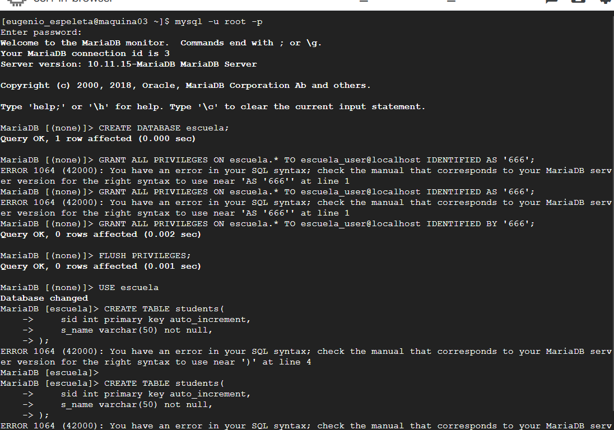
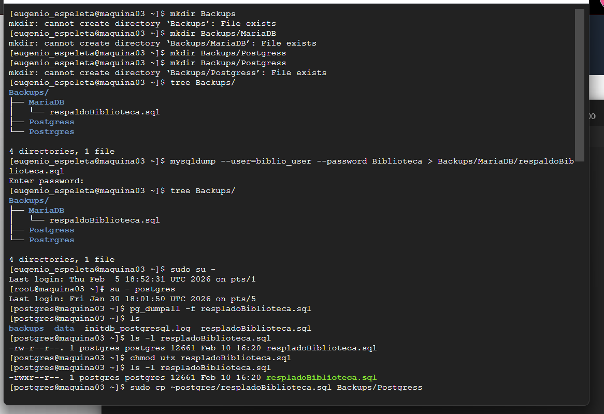
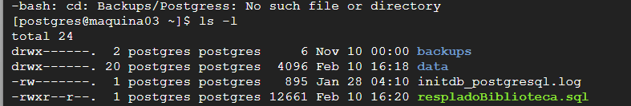

🎯 Objetivo
Implementar una estrategia básica de respaldos para distintos sistemas gestores de bases de datos (MariaDB y PostgreSQL) en un entorno Linux, utilizando herramientas de línea de comandos, organizando los archivos por motor y gestionando correctamente permisos y propiedad de ficheros. Se enfatiza la identificación y corrección de errores reales en la gestión de rutas, usuarios y permisos.
💡 Conceptos Clave
Respaldo Lógico
Exportación de la estructura y datos de una base de datos en formato SQL, permitiendo su restauración posterior.
mysqldump
Herramienta utilizada para generar respaldos lógicos de bases de datos en MariaDB/MySQL mediante redirección a archivo SQL.
pg_dumpall
Utilidad de PostgreSQL para exportar todas las bases de datos y objetos del clúster en un solo archivo SQL.
chmod
Comando para modificar permisos de lectura, escritura y ejecución en archivos y directorios de Linux.
chown
Comando para cambiar el propietario y grupo de un archivo o directorio en sistemas Unix/Linux.
Estructura de Directorios
Organización jerárquica de carpetas para almacenar respaldos de forma ordenada por motor de base de datos.
✓ Evidencia de Aprendizaje
Creación de Estructura de Directorios
Crear directorio principal de respaldos con subdirectorios organizados por motor (MariaDB y PostgreSQL).
Respaldo de MariaDB
Generar dump lógico de base de datos MariaDB usando mysqldump y redirección a archivo SQL.
Respaldo de PostgreSQL
Exportar todas las bases de datos del clúster PostgreSQL usando pg_dumpall como usuario postgres.
Gestión de Permisos
Corregir permisos de lectura/ejecución (chmod) y propietarios (chown) en archivos de respaldo.
Visualización con tree
Usar utilidad tree para visualizar y validar la estructura completa de respaldos creada.
Identificación y Corrección de Errores
Detectar y corregir errores reales: typos en comandos, rutas incorrectas, permisos insuficientes.
📸 Evidencia de Implementación
Paso 1: Creación de Estructura de Respaldos
Crear el directorio principal Backups y sus subdirectorios separados por motor de base de datos:
# Crear estructura de directorios
mkdir -p Backups/MariaDB
mkdir -p Backups/PostgreSQL
# Instalar tree para visualización
sudo dnf install tree -y
# Visualizar estructura
tree Backups/
Creación de la estructura de directorios para organizar respaldos por motor de base de datos
Paso 2: Respaldo de MariaDB
Generar respaldo lógico de la base de datos Biblioteca en MariaDB. Se corrigió un typo inicial en el comando:
# Intento fallido (nota el typo: mysqldum)
mysqldum --user=biblio_user --password Biblioteca > Backups/MariaDB/respaldoBiblioteca.sql
# Comando correcto
mysqldump --user=biblio_user --password Biblioteca > Backups/MariaDB/respaldoBiblioteca.sql
# Verificar que se creó el archivo
ls -lh Backups/MariaDB/
Proceso de generación de respaldos lógicos para MariaDB y PostgreSQL
Paso 3: Respaldo de PostgreSQL
Cambiar al usuario postgres y ejecutar pg_dumpall para exportar el clúster completo:
# Cambiar a usuario root
sudo su -
# Cambiar a usuario postgres
su - postgres
# Crear respaldo completo del clúster
pg_dumpall -f /var/lib/postgresql/respladoBiblioteca.sql
# Salir de postgres y volver a usuario normal
exit
exitPaso 4: Gestión de Permisos y Propiedad
Listar archivos, adjustar permisos y corregir propietario del archivo PostgreSQL:
# Listar archivos de respaldo de PostgreSQL
ls -l
# Ver detalles del archivo problemático (nombre incorrecto inicialmente)
ls -l respaldoBiblioteca.sql
# Ajustar permisos para lectura del usuario
chmod u+r respaldoBiblioteca.sql
# Verificar cambios
ls -l respaldoBiblioteca.sql
# Copiar archivo a directorio Backups
sudo cp respaldoBiblioteca.sql Backups/PostgreSQL/
# Cambiar propiedad del archivo
cd Backups/PostgreSQL
sudo chown eugenio_espeleta:eugenio_espeleta *
# Verificar resultado final
ls -l
Corrección de permisos y cambio de propietarios en archivos de respaldos PostgreSQL
Paso 5: Visualización Final de Estructura
Usar tree para visualizar la estructura completa de respaldos organizados por motor:
# Mostrar estructura completa con tree
tree Backups/
# Resultado esperado:
# Backups/
# ├── MariaDB/
# │ └── respaldoBiblioteca.sql
# └── PostgreSQL/
# └── respaldoBiblioteca.sqlComandos Útiles para Respaldos
-- RESPALDO EN MariaDB
mysqldump -u usuario -p nombre_base_datos > respaldo.sql
mysqldump -u usuario -p --all-databases > respaldo_completo.sql
-- RESPALDO EN PostgreSQL
pg_dump -U usuario nombre_base_datos > respaldo.sql
pg_dumpall -U usuario > respaldo_completo.sql
-- RESTAURACIÓN EN MariaDB
mysql -u usuario -p nombre_base_datos < respaldo.sql
-- RESTAURACIÓN EN PostgreSQL
psql -U usuario nombre_base_datos < respaldo.sql
-- GESTIÓN DE PERMISOS
chmod 600 respaldo.sql # Solo propietario puede leer
chmod 644 respaldo.sql # Propietario lee/escribe, otros leen
chown usuario:grupo respaldo.sql # Cambiar propietario y grupo
-- COMPRIMIR RESPALDOS
gzip respaldo.sql # Crear respaldo.sql.gz
gunzip respaldo.sql.gz # Descomprimir
-- VERIFICAR RESPALDO
head -20 respaldo.sql # Ver primeras líneas
wc -l respaldo.sql # Contar líneas
file respaldo.sql # Ver tipo de archivo📋 Conclusiones
📚 Aprendizajes Principales
He aprendido a generar respaldos lógicos de MariaDB y PostgreSQL, organizar archivos por motor de base de datos, y manejar correctamente permisos y propietarios en Linux. Estos son conceptos fundamentales para administración de sistemas.
⚠️ Desafíos Encontrados
Los principales problemas fueron typos en nombres de comandos (mysqldum vs mysqldump), nombres de archivos mal escritos, y permisos insuficientes al intentar ver archivos propiedad del usuario postgres.
🎯 Mejoras Futuras
Automatizar respaldos con cron, implementar rotación de respaldos antiguos, usar encriptación para proteger archivos, almacenar respaldos en ubicaciones remotas, y crear scripts de restauración validados.